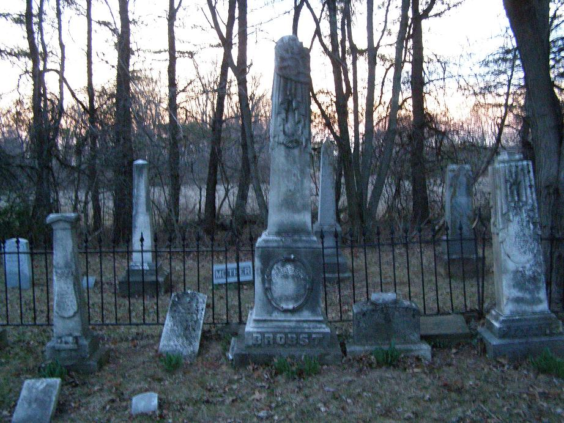

It's just a little crossroads town on Route 674, south of Columbus and somewhere north of Amanda. 674 for much of its length marks the county line, Fairfield on the east and Pickaway on the left, which puts the town cemetery in the latter. Compared to the barely-existent town, which it's just north of, the cemetery is full of interesting sights.
It's all here: MOTHER/FATHER arches....
...Family plots enclosed by low, decorative fencing....

...Clusters of hundred-year-old obelisks with the writing so weathered away you'd need rubbing charcoal to read it....

...And the forgotten, broken and eroded stumps standing in the back corner of this little piece of rural history, unreadable even on the best of days but with their own dark charm neverthelesss:
It was a cool little discovery to make as the sun was going down and I was alone, driving the back roads back home to Columbus. Well worth backing up for. If you'd like to see it, it's pretty hard to miss, provided you can locate the barely-there village of Marcy on a map to begin with.
One little anomaly: You'd think this plot was retired, but there are a couple of ordinary benches there, accompanied by one of those marble grave marker benches, and it dates from a recent year.
Helen Elizabeth Chenowith managed to get squeezed into this relatively crowded little cemetery when she died in 1999. Maybe her family tradition gave her an upper hand. It's just the only marker that stands out as new in what otherwise seems a very creepy little village boneyard--particularly at twilight, when you're trying to beat sunset and avoid any malevolent spirits which might emerge after dark.
Back